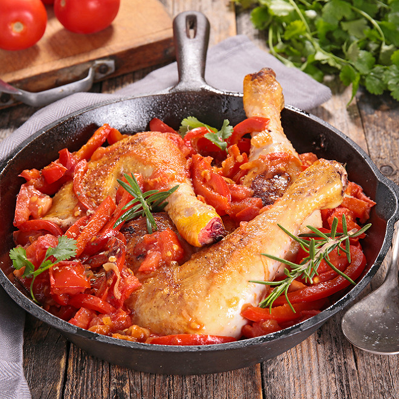

POULET BASQUAISE

Description
Le poulet basquaise ou poulet à la basquaise est une spécialité culinaire
emblématique de la cuisine basque,
étendue avec le temps à la cuisine française,
à base de morceaux de poulet mijotés dans un ragout de tomates, poivrons et de carottes
Ingrédients pour 4 personnes
- 4 Filets de poulet
- 30gr d'huile d'olive
- 2 oignons jaunes
- 4 tomates
- 2 poivrons
- 2 carottes
- 200gr d'olives noir d'énoyauté
- 2 cuillères à café de cumin en poydre
- 1 bouquet garni
- sel
- poivre
Etapes de la recette
- dans une grande poêle, faites chauffer l'huile d'olive à feu moyen.
Ajoutez les morceaux de poulet et faites-les dorer de tous les côtés.
Retirez-les de la poêle et réservez.
- dans la même poêle, ajoutez les oignons émincés
et faites-les revenir jusqu'à ce qu'ils deviennent translucides.
- ajoutez les poivrons coupés en lanières et l'ail haché.
Faites sauter pendant quelques minutes jusqu'à ce que les poivrons ramollissent légèrement.
- incorporez les tomates concassées, le piment d'Espelette, le bouquet garni,
du sel et du poivre.
Laissez mijoter pendant 10 à 15 minutes pour que la sauce épaississe légèrement.
- remettez les morceaux de poulet dans la poêle, en les enfonçant dans la sauce.
Couvrez la poêle et laissez cuire à feu doux pendant environ 30 minutes,
ou jusqu'à ce que le poulet soit bien cuit et tendre.
Vous n'avez plus qu'à présenter votre poulet basquaise dans votre assiette,
servez chaud, accompagné de ,
de pommes de terre ou de pain frais pour profiter de cette délicieuse recette de poulet basquaise.